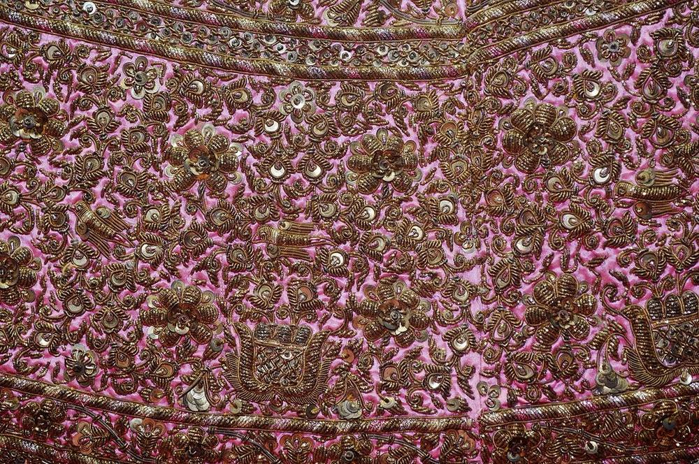
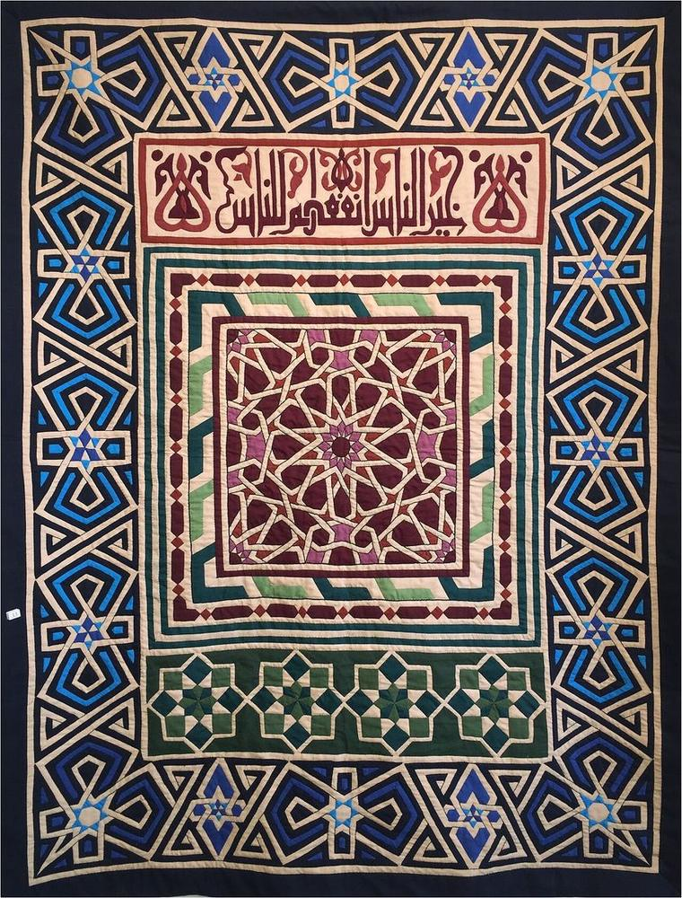
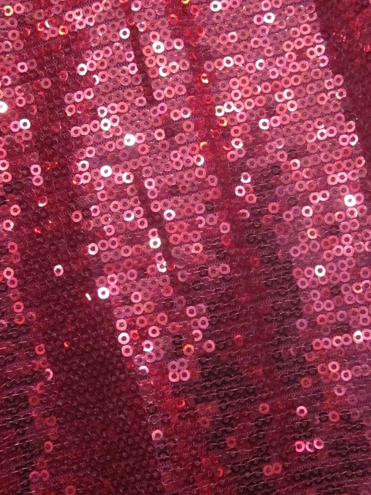
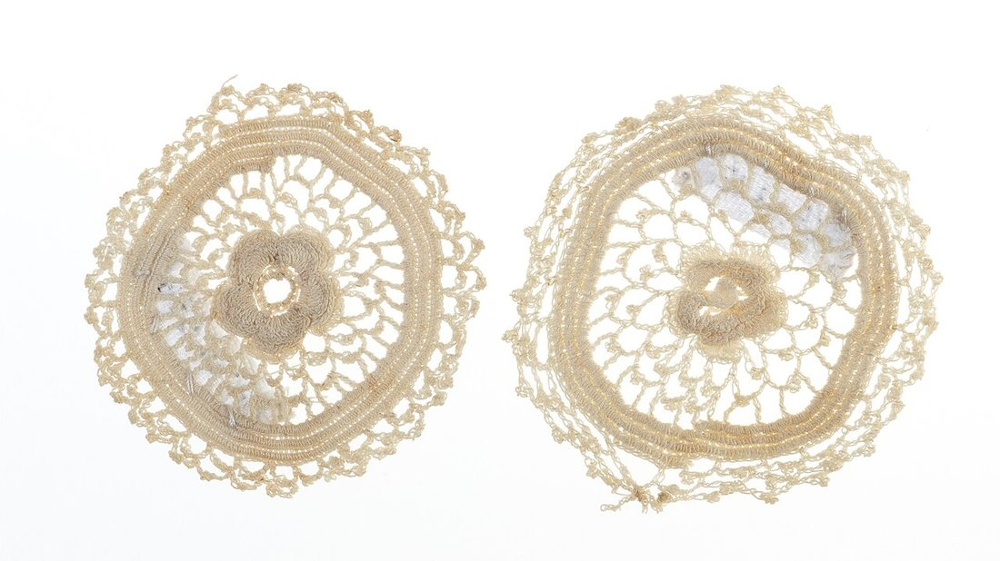
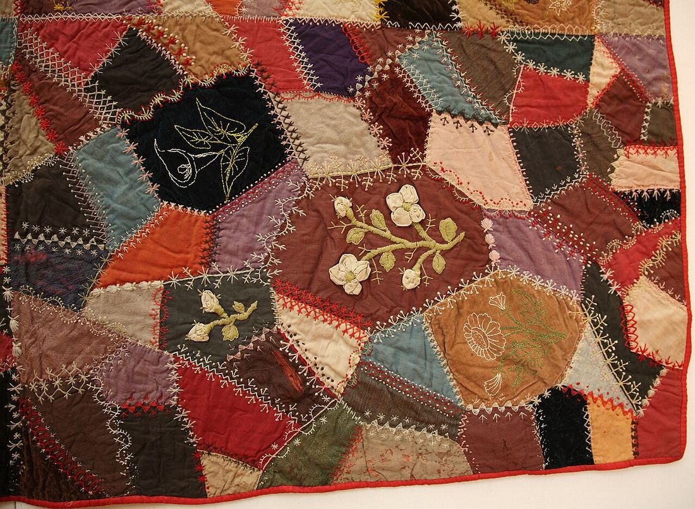
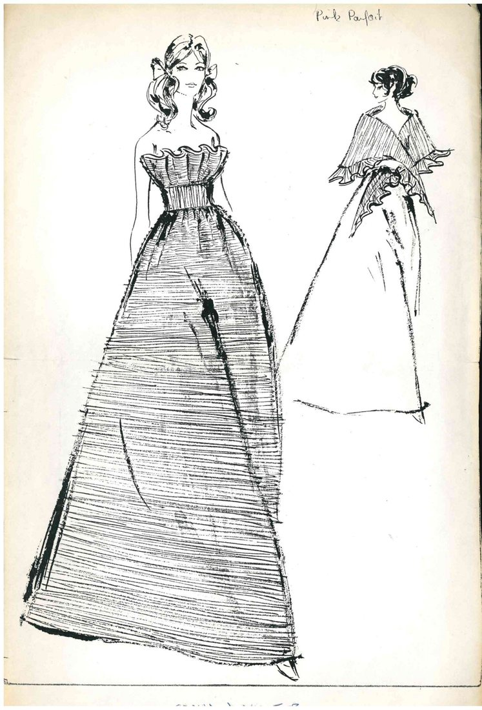

Көркем еңбек · 3-бөлім · Киім пішу және тігу Art & Craft · Section 3 · Sewing & Pattern-making Художественный труд · Раздел 3 · Конструирование и пошив одежды
💃 Бұйымды сәндеу мен әрлеу. Сән және стиль
💃 Decorating & Finishing. Fashion & Style
💃 Декорирование и отделка изделия. Мода и стиль
Қарапайым бұйымды әрлеу арқылы әдемі әрі ерекше етеміз. How finishing and decoration turn a plain item into something beautiful and unique. Как отделка и декор превращают простую вещь в красивую и неповторимую.
Әрлеу (отделка) — бұйымды тіккеннен кейін оны әрлеп, аяқтап бітіру. Сәндеу (декорирование) — оны әшекеймен, өрнекпен, қосымша элементтермен әсемдеу. Дәл осы кезеңде қарапайым алжапқыш не юбка ерекше, жеке бұйымға айналады. Бірақ басты ереже — өлшем сезімі: артық әшекей бұйымды бұзады. Жақсы талғам деген — әрлеуді мата, түс және бұйымның мақсатымен үйлестіре білу. Осыдан сән мен стиль туады. Finishing means completing a garment neatly after it is sewn. Decoration means making it beautiful with trims, patterns and added elements. It is at this stage that a plain apron or skirt becomes special and personal. But the main rule is a sense of proportion: too much decoration spoils a garment. Good taste means matching the decoration to the fabric, the colour and the purpose of the item. This is where fashion and style are born. Отделка — это аккуратное завершение изделия после пошива. Декорирование — украшение его отделочными элементами, узором, дополнительными деталями. Именно на этом этапе простой фартук или юбка становятся особенными и неповторимыми. Но главное правило — чувство меры: лишний декор портит вещь. Хороший вкус — это умение согласовать отделку с тканью, цветом и назначением изделия. Так рождаются мода и стиль.
Сәндеу тәсілдері Ways to Decorate Способы декорирования
🔍 Толық суретін көру үшін кез келген картаны басыңыз. 🔍 Tap any card to see the full picture. 🔍 Нажмите на любую карточку, чтобы увидеть фото целиком.






Қайда және қалай орналастырамыз Where & How to Place Decoration Где и как размещать декор
Жиектерде.On the edges.По краям. Жаға, жең ұшы, етек, қалта — әрлеуге ең қолайлы орындар.Collar, cuffs, hem, pockets — the best places for trim.Воротник, манжеты, низ, карманы — лучшие места для отделки.
Бір орталық.One focus.Один акцент. Бір ғана басты әрлеу нүктесін таңда — көз сонда тоқтасын.Choose one main accent so the eye has a place to rest.Выбери один главный акцент, чтобы взгляду было где остановиться.
Өлшем сезімі.Sense of measure.Чувство меры. «Аз — көп» деген қағиданы ұста: артық әшекей бұзады.Keep to "less is more": too much decoration spoils.Помни «меньше — лучше»: лишний декор портит.
Түс үйлесімі.Colour harmony.Гармония цвета. Әрлеу түсі матамен үйлессін не әдемі контраст берсін.The trim colour should match the fabric or give a nice contrast.Цвет отделки должен сочетаться с тканью или давать красивый контраст.
Сән және стиль Fashion & Style Мода и стиль
Сән — өзгермелі, ал жеке стиль — тұрақты. Талғам екеуінің арасын байланыстырады. Fashion changes; personal style stays. Taste connects the two. Мода меняется, а личный стиль остаётся. Вкус связывает их вместе.
Сән (мода) — белгілі бір кезеңде көпшілік ұнататын пішін, түс, әрлеу. Ол үнемі өзгеріп отырады. Стиль — адамның өзіне тән, тұрақты киіну мәнері. Жеке стиль сәнді көзсіз қумай, өзіне жарасқанын таңдай білуден туады. Fashion is the shapes, colours and trims most people like in a given period. It keeps changing. Style is a person's own, steady way of dressing. Personal style grows from choosing what suits you instead of blindly following every trend. Мода — это формы, цвета и отделка, которые нравятся большинству в определённый период. Она постоянно меняется. Стиль — это собственная, устойчивая манера одеваться. Личный стиль рождается из умения выбирать то, что идёт тебе, а не слепо следовать каждому тренду.
СилуэтSilhouetteСилуэт
Бұйымның жалпы пішіні: тік, жарты-күн, жинақы. Денеге жарасуы маңызды.The overall shape: straight, A-line, fitted. It must suit the figure.Общая форма: прямой, расклёшенный, приталенный. Важно, чтобы шёл фигуре.
ТүсColourЦвет
Түстер бір-бірімен және адамның келбетімен үйлесуі тиіс.Colours should harmonise with each other and with the person.Цвета должны гармонировать между собой и с внешностью человека.
МатаFabricТкань
Матаның түрі бұйым мақсатына сай: күнделікті не салтанатты.The fabric should fit the purpose: everyday or dressy.Ткань подбирают под назначение: повседневное или нарядное.
ҮйлесімHarmonyГармония
Барлық детальдар бір ойға, бір көңіл-күйге бағынуы керек.All details should serve one idea and one mood.Все детали должны подчиняться одной идее и настроению.
✅ Жақсы талғам ережелері ✅ Rules of Good Taste ✅ Правила хорошего вкуса
1
Өлшем сезімі: бір бұйымда көп тәсілді араластырма.Sense of measure: don't mix too many techniques in one item.Чувство меры: не смешивай много приёмов в одной вещи.
2
Мақсатқа сай: әрлеу бұйымның қызметіне кедергі болмасын.Fit the purpose: decoration must not get in the way of use.По назначению: декор не должен мешать носить вещь.
3
Ұқыптылық: әдемі әрлеу — әрқашан таза әрі мұқият орындалған.Neatness: beautiful decoration is always clean and carefully done.Аккуратность: красивый декор всегда чистый и аккуратный.
Әрлеу мен сәндеу — бұйымға жан бітіретін соңғы қадам. Талғаммен таңдалған бір ғана деталь киімді ерекше етеді. Сәнді бақыла, бірақ өз стиліңді ұмытпа — нағыз сұлулық осында. Finishing and decoration are the final step that gives a garment its soul. A single tastefully chosen detail makes an item special. Follow fashion, but keep your own style — that is where true beauty lies. Отделка и декор — последний штрих, дающий изделию душу. Одна со вкусом выбранная деталь делает вещь особенной. Следи за модой, но не теряй свой стиль — в этом и есть настоящая красота.